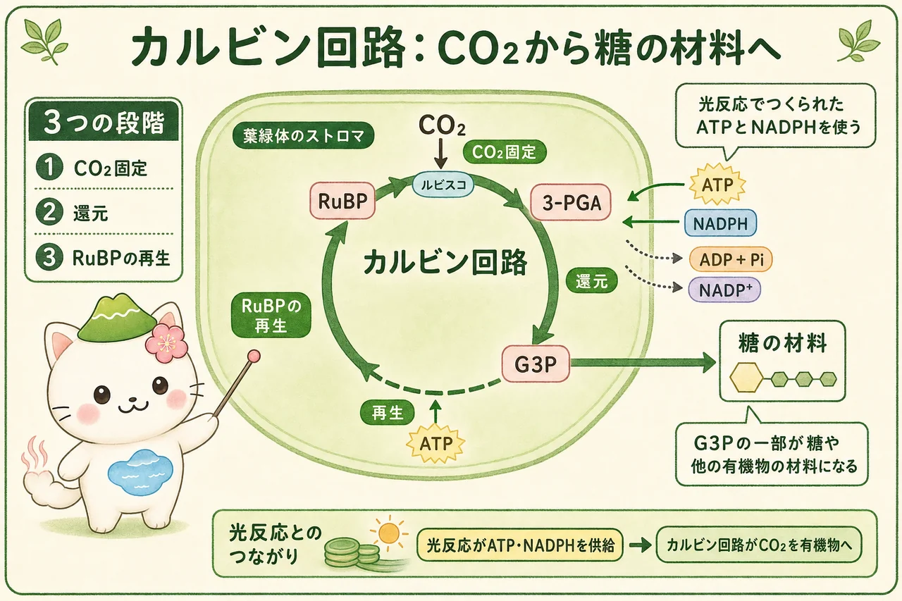

光合成を二つの過程で捉える
光合成では、光エネルギーを利用して、二酸化炭素（CO2）と水から有機物をつくり、酸素を放出します。けれども、光がただ糖を直接つくるわけではありません。まず光エネルギーを、細胞が使いやすいATPとNADPHという化学的な形へ変えます。次に、そのATPとNADPHを使ってCO2を固定し、有機物の材料をつくります。
前半を光反応、後半をカルビン回路と呼びます。二つは場所も直接のエネルギー源も異なりますが、切り離せません。光反応がATPとNADPHを供給し、カルビン回路は使い終えたADP、リン酸、NADP+を返します。葉緑体の中では、物質が循環しながら働いています。
葉緑体の二つの場所
葉緑体の内部には、袋状のチラコイドが重なった部分があります。チラコイドを囲む膜がチラコイド膜、袋の内側がチラコイド内腔です。チラコイド膜には、光を受け取る色素と電子伝達に関わるタンパク質が並び、光反応が進みます。
チラコイドの外側を満たす液体部分がストロマです。ストロマではカルビン回路が進みます。この配置を先に押さえると、「H+を内腔にためる」「ATPとNADPHをストロマ側で使う」という話を、場所と結びつけて読めます。
光反応：ATPとNADPHをつくる
光化学系IIが光を受けると、水から電子を取り出します。このとき水に由来する酸素（O2）が放出されます。電子は電子伝達系を通って光化学系Iへ進み、もう一度光エネルギーを受け取ったのち、NADP+をNADPHへ還元するために使われます。したがって、光合成で外へ出る酸素の直接の由来はCO2ではなく水です。
同時に、水の分解と電子伝達によってH+がチラコイド内腔にたまり、膜をはさんだH+勾配ができます。H+がATP合成酵素を通ってストロマ側へ戻るとき、ADPとリン酸からATPがつくられます。このしくみを化学浸透といいます。


光反応の「光」は、ATPを直接つくる魔法ではないよ。電子を高いエネルギー状態へ持ち上げ、H+勾配とNADPHをつくるために使われるんだ。ATPは、その勾配から生まれるよ。
カルビン回路：CO2を有機物へ
カルビン回路はストロマで進みます。まず酵素ルビスコが、CO2を5炭糖のRuBPに結びつけます。これがCO2固定です。できた3-PGAは、光反応が供給したATPとNADPHを使って還元され、G3Pへと変わります。
G3Pの一部は回路の外へ出て、スクロース、デンプン、セルロース、アミノ酸など、さまざまな有機物をつくる材料になります。残りの大部分はATPを使ってRuBPを再生し、次のCO2固定を続けます。このためカルビン回路は、固定・還元・再生の三段階を繰り返す回路です。

光合成の速さを決める条件
光合成の速さは、光の強さだけで決まりません。CO2が葉へ入る量、気孔の開き方、温度、水の状態、葉緑体の酵素の働き、窒素などの栄養状態も関わります。ある条件だけを強くしても、別の条件が不足すれば全体の速さはそれ以上に上がりません。
カルビン回路は光を直接吸収する反応ではありませんが、光反応がATPとNADPHを供給しなければ続きません。そのため「暗反応」と呼ぶより、光反応に対する炭素固定の反応として、必要な物質と場所を意識して理解するほうが正確です。乾燥時に気孔が閉じると、CO2の取り込みが抑えられ、光合成全体にも影響します。
「光がある＝いつでも最大の光合成」ではないよ。水不足で気孔が閉じればCO2が入りにくいし、低温では酵素の反応も変わる。光・CO2・水・温度をセットで見よう。
この冊子の要点
- 光合成は、チラコイド膜の光反応と、ストロマのカルビン回路が受け渡しをして進みます。
- 光反応では、水の分解、電子伝達、H+勾配を通じてATPとNADPHがつくられ、酸素が放出されます。
- カルビン回路はATPとNADPHを使い、CO2固定・還元・RuBP再生を繰り返してG3Pをつくります。
- G3Pは糖や他の有機物の材料になり、光合成の速さは光だけでなくCO2、水、温度、気孔などにも左右されます。
参照資料
- OpenStax Biology 2e：The Light-Dependent Reactions of Photosynthesis
- OpenStax Biology 2e：The Calvin Cycle
- Taiz et al., Plant Physiology and Development, Oxford University Press.